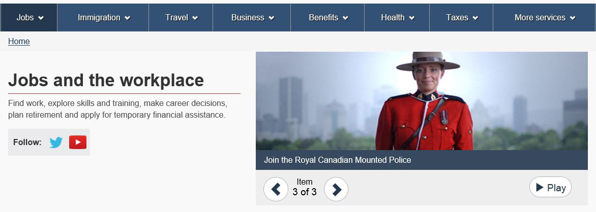

You can use images and videos to:
When planning your content, weigh the benefits of using videos with the impact on people who will try to view them using mobile devices. Data plans and reliable network access vary.
Make sure that you have the appropriate permissions to publish images, audio files and videos online. You'll need to have the written proof of those rights. Refer to the Procedures for Publishing or contact your institution's authoring team for more details.
For specific information about consent forms or licensing requirements related to Canada.ca, contact the Principal Publisher: na-web_support-soutien_du_web-gd@servicecanada.gc.ca.
Images can distract people. They can also make the page take longer to load. Make sure your images add value to your content.
There are 2 main types of images:
Functional images:
Functional images add value to the content because they provide more information than can be provided through text alone. Examples of functional images:
Include the appropriate alternative text to describe the image for people who are unable to view it.
| City | Condition | Temperature |
|---|---|---|
| Calgary | Mainly sunny | 0°C |
| Charlottetown | Drifting snow | -11°C |
| Edmonton | (no data) | 0°C |
| Fredericton | Sunny | -12°C |
| Halifax | Mainly sunny | -7°C |
| Iqaluit | Drifting snow | -22°C |
| Montréal | Sunny | -16°C |
| Ottawa (Kanata - Orléans) | Mainly sunny | -15°C |
| Prince George | Partly cloudy | 2°C |
| Québec | Partly cloudy | -19°C |
| Regina | Cloudy | -4°C |
| Saskatoon | Mist | -8°C |
| St. John's | Mist | 2°C |
| Thunder Bay | Partly cloudy | -14°C |
| Toronto | Light snow | -6°C |
| Vancouver | Mostly cloudy | 9°C |
| Victoria | Light rain | 8°C |
| Whitehorse | Partly cloudy | -19°C |
| Winnipeg | Sunny | -18°C |
| Yellowknife | Mainly sunny | -28°C |
| Education | Task | Navigation | Support | Information | Corporate | |
|---|---|---|---|---|---|---|
| General | 2 | 0 | 20 | 4 | 100 | 50 |
| Students | 2 | 2 | 1 | 5 | 50 | 0 |
| Business | 60 | 10 | 20 | 90 | 50 | 8 |
| Professional | 46 | 26 | 5 | 101 | 200 | 142 |
| Lawyer | 0 | 2 | 4 | 0 | 300 | 300 |
Use decorative images only to provide visual context for the following templates:
Don't place meaningful text, such as campaign or program titles, in decorative images.
Include the appropriate alternative text to describe the image for people who are unable to view it.
Get details about the templates above in the Canada.ca Content and Information Architecture Specification.

Description of the image
A Royal Canadian Mounted Police officer on the Canada.ca web page related to jobs and the workplace.
Learn where to place images and videos on Canada.ca and what size they should be:
Alternative text (or alt text) is text that describes an image. It makes it possible for people using assistive technologies to access the information conveyed by an image. It also helps search engines better understand the purpose of the image.
When you're writing alternative text for a functional image:
Decorative images don't require additional information to make them accessible or visible to search engines. Use the null indicator as the alternative text (alt="").
Long descriptions explain information that is presented in complex infographics or images. You must provide a long description if you can't describe the content and function of the image in less than 140 characters. If you can describe the image in less than 140 characters, use alternative text instead.
If a detailed and equivalent explanation of the image appears in the text immediately before or after a complex image, you don't have to provide a long description.
If you provide a long description for an image, you must also provide alternative text for the long description.
Figure 1 illustrates a number of concepts. It requires a long description.
You could write the following alternative text for the image shown in Figure 1:
A balanced scorecard showing how business activities align with an organization's vision and strategy to monitor key performance indicators. Text version below.
You could write the following long description for the image shown in Figure 1:
A balanced scorecard is a strategic planning and management system used worldwide to align business activities with an organization's vision and strategy.
Business activities are grouped into 4 perspectives, all of which are interdependent and come from the vision and strategy. These are learning and growth, internal business processes, financial, and customer. Each has a question associated with it.
To achieve our vision, how will we sustain our ability to change and improve?
To satisfy our shareholders and customers, what business processes must we excel at?
To succeed financially, how should we appear to our shareholders?
To achieve our vision, how should we appear to our customers?
Each perspective can be monitored using the following 4 components:
Figure 2 is a bar chart. The information in it came from a data table. You could therefore use the table as the long description for this image.
Source: Office of the Chief Human Resources Officer, Treasury Board of Canada Secretariat
Note: Includes all tenures. Figures do not include employees on leave without pay.
You could write the following alternative text:
Comparison of the ratio of women and men in the civil service between 1983 and 2010. Text version below.
You could write the following long description text:
| Gender (by percentage) | 1983 | 1988 | 1993 | 1998 | 2003 | 2008 | 2010 |
|---|---|---|---|---|---|---|---|
| Men | 58.2 | 55.7 | 52.9 | 49.6 | 46.7 | 45.1 | 44.8 |
| Women | 41.8 | 44.3 | 47.1 | 50.4 | 53.3 | 54.9 | 55.2 |
Source: Office of the Chief Human Resources Officer, Treasury Board of Canada Secretariat |
|||||||
Work with your web team to determine the best way to include the long description information. They'll guide you on how to make sure the image is accessible to people using assistive technology. They'll also ensure that your image meets the Canada.ca Content and Information Architecture Specification.
A transcript is the text equivalent of an audio or video file. They make it easier for people who need to access information in audio or visual media but can't hear or see the content because:
Make sure the transcript describes all pre-recorded information and action, including: